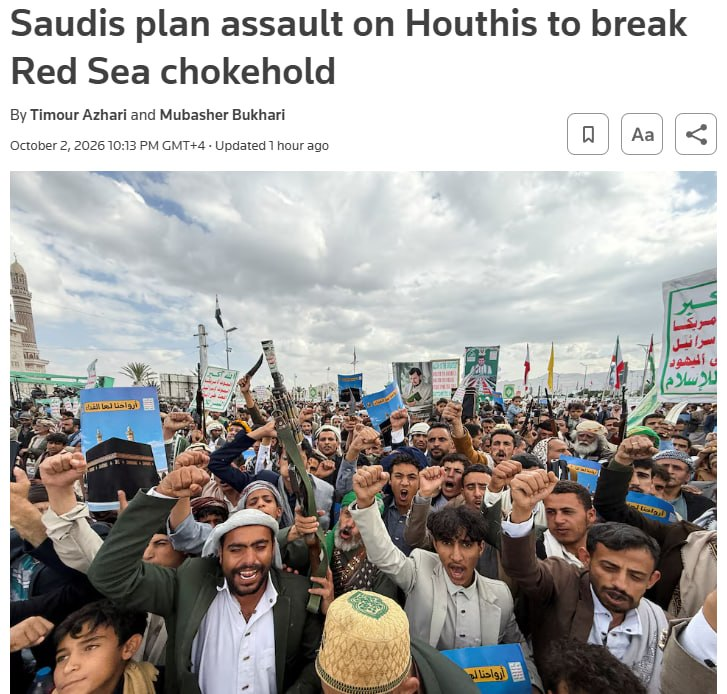

Топор Live
@toporlive
Топор Live
@toporlive
Саудовская Аравия в ближайшие недели планирует начать наступление на хуситов в Йемене Reuters.

⚡️Саудовская Аравия в ближайшие недели планирует начать наступление на хуситов в Йемене, — Reuters.
По данным собеседников агентства, в операции задействуют йеменские вооружённые силы под руководством Эр-Рияда и при поддержке саудовской авиации. В зависимости от масштаба к наступлению могут привлечь более 100 тысяч йеменских военных.
Прямого участия союзников Саудовской Аравии в боевых действиях не ожидается.
👉 Топор Live. Подписаться
По данным собеседников агентства, в операции задействуют йеменские вооружённые силы под руководством Эр-Рияда и при поддержке саудовской авиации. В зависимости от масштаба к наступлению могут привлечь более 100 тысяч йеменских военных.
Прямого участия союзников Саудовской Аравии в боевых действиях не ожидается.
👉 Топор Live. Подписаться